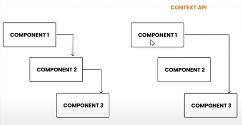

Vemos abaixo a diferença entre o Não-uso do Context e do uso do Context:

Vemos que em ambos os casos o componente 2 não utiliza as props, porém, no exemplo 1 (esquerda) as props ainda precisam ser declaradas dentro do componente 2.
Já no exemplo 2 (direita) as props são passadas apenas nos componentes que vão precisar delas.
Context.Provider: Provedor é alguém que provê um estado/informações que chegarão até os componentes filhos.
Quando usar o Context: Geralmente em botões pra alterar o Tema da página (dark-mode or light-mode). Da pra pegar os dados de Login de um usuário e passar pra vários componentes abaixo da árvore preenchendo com seu nome vários micro-cartões pela tela, por exemplo, sem precisar ficar passando essas Props pra todos os filhos até chegar no destino.
Context API serve pra resolver o problema de PropDrilling em sistemas menores/mais simples. Redux vai ser uma parada mais robusta pra trabalhar com essa questão de estado dos componentes.